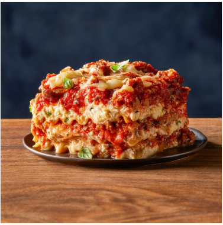

Home
Lasagna

Description
Our Lasagna is made with all natural ingredients and with love.
Ingredients
- Meat: ½ pound ground pork and ½ pound lean ground beef
- Onion: ½ cup minced onion
- Canned tomatoes: 1 (28 ounce) can crushed tomatoes
- Tomato sauce: 1 (8 ounce) can tomato sauce
- Parsley and garlic: 2 tablespoons chopped fresh parsley, divided and 1 clove garlic, crushed
- Basil: 1 ½ teaspoons dried basil
- Salt: 1 ½ teaspoons salt
- Oregano: ½ teaspoon dried oregano
- Sugar: ⅛ teaspoon white sugar
- Noodles: 1 (16 ounce) package lasagna noodles
- Cheese: 1 pound small-curd cottage cheese and ¾ cup grated Parmesan cheese
- Eggs: 3 large eggs
Steps
- Gather all ingredients.
- Combine pork and ground beef in a large, deep skillet over medium-high heat; cook and stir until browned and crumbly, 5 to 7 minutes.
- Add onion and cook until translucent, about 5 minutes.
- Stir in crushed tomatoes, tomato sauce, 1 tablespoon fresh parsley, garlic, basil, salt, oregano, and sugar. Reduce heat to medium-low and simmer, stirring occasionally, for 30 minutes.
- While the sauce is simmering, bring a large pot of lightly salted water to a boil. Cook lasagna noodles in the boiling water, stirring occasionally, until tender yet firm to the bite, 8 to 10 minutes. Drain and set aside. While the noodles are cooking, preheat the oven to 375 degrees F (190 degrees C).
- Mix cottage cheese, Parmesan cheese, eggs, remaining 1 tablespoon fresh parsley, salt, and pepper in a large bowl until combined.
- Assemble lasagna: Spread a spoon or two of sauce over the bottom of a 9x13-inch baking dish just to to coat it. Place two layers of noodles over the sauce to cover.
- Layer with 1/2 of the cheese mixture, 1/2 of the remaining sauce, and 1/2 of the mozzarella cheese. Repeat layers once more using the remaining noodles, cheese mixture, sauce, and mozzarella. Cover the baking dish with aluminum foil.
- Bake in the preheated oven for 30 to 40 minutes. Remove the foil and bake until cheese is golden brown, 5 to 10 more minutes.
- Remove from the oven and let stand for 10 minutes before cutting and serving.